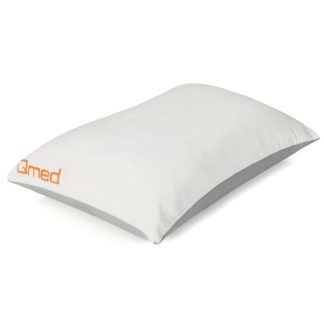

Ortopedinės pagalvės
 Prisijungimas Prisijungimas Prekių krepšelis Krepšelis tuščias. Viso prekių už 0 00 € Peržiūrėti krepšelį Iki nemokamo pristatymo liko 35 00 € Pristatysime nemokamai!Turite klausimų?
+370 609 79001 / +370 673 02201
Lovos užtiesalai suteiks kambario interjerui jaukumo, elegantiškumo bei praskaidrins kasdienybę.
Pledai Medvilniniai Lininiai Vilnoniai Mikropluošto Miego akiniaiŠilkiniai miego akiniai nesausina veido odos, nesugeria ką tik patepto paakių kremo ir tuo pačiu apsaugo nuo papildomų raukšlių susidarymo.
Sienos lipdukai Purškikliai patalyneiPurškiliai Jūsų namus pripildys gaivos, švaros ir naujovių pojūčiais. Galima purkšti ant įvairios rūšies audinių, pvz, užuolaidų, baldų, patalynės.
Čiužiniai Dovanų kuponai Vaiko kambarys Patalynės komplektai Kūdikiams Vaikams/Paaugliams Antklodės Kūdikiams Vaikams/Paaugliams Pagalvės Kūdikiams Vaikams/Paaugliams Dekoratyvinės pagalvės Maitinimo pagalvės Paklodės Kūdikiams Vaikams/Paaugliams Daiktadėžės Lovos užtiesalai Pledai Kūdikiams Vaikams/Paaugliams Palapinės vaikamsPalapinės, kurios tikrai patiks kiekvienam vaikui, pagamintos iš natūralios ir lengvai prižiūrimos medžiagos.
Sienos lipdukai Pufai ir sėdmaišiai Vaikiški kilimai ir kilimėliai Skalbiami medvilniniai kilimai Žaidimų kilimėliai Miegmaišiai ir vokeliai Vaikiški chalatai Vaikiški rankšluosčiai Žaislai - Miego draugai Gertuvės vaikams Čiužiniai Tinkleliai nuo uodų Dovanų kuponai Vonia ir Spa Rankšluosčiai Bambukiniai rankšluosčiai Medvilniniai rankšluosčiai Lininiai rankšluosčiai Paplūdimio rankšluosčiai/paklotai Vaikiški rankšluosčiai Vonios kilimėliai Chalatai Naktinukai/Pižamos Kvapai namams Kvapų difuzoriai Kvepiančios žvakės Kvapų purškikliai Veido priežiūra Kremai, Serumai Prausikliai, Šveitikliai Tonikai ir Valikliai Kosmetikos rinkiniai Vyriška kosmetika Valikliai šepetėliams Kūno priežiūra Kremai rankoms Kremai kūnui Šveitikliai RANKŲ DEZINFEKANTAS Dovanų kuponai Laisvalaikis Pirkinių krepšiai Kosmetinės Kuprinės Paplūdimio paklotai Liemenės Pinti krepšiai Gertuvės Veido kaukės Dovanų kuponai Iki -67 % NUOLAIDOS Iki -67% NUOLAIDOSSaulės Patalynėje - MAKSIMALIOS nuolaidos, kuriomis verta pasinaudoti!
PATARIMAI: Apklausos rezultatai: dvipusė ar vienpusė patalynė? Ar pūkines pagalves galima skalbti? Lovos užtiesalai – tai būdas atrasti save? Satininė patalynė – kuo ji ypatinga? Kaip išsirinkti patalynę? Nepriekaištinga veido oda per 2 savaites Kuo skiriasi ančių ir žąsų pūkų-plunksnų pagalvės? Tekstilės gaminių priežiūros etiketės ir simboliai - ką verta žinoti? Kraitelis kūdikiui – kokią patalynę geriausia rinktis? Dizaineriai renkasi Saulės Patalynę Šilkiniai chalatai, naktinukai ir miego akiniai – lietuvių sukurtas stebuklas Populiariausių antklodžių TOP-3 Lietuviška lininė patalynė – nauja vasaros kolekcija Lietuviškas buGo prekės ženklas – nuo idėjos iki produkto KOKIA ANTKLODĖ JUMS TINKAMIAUSIA? SKALBIAMI MEDVILNINIAI KILIMAI VAIKAMS Kodėl reikalingi sienos lipdukai? Daily Card kortelės nuolaidos Naudinga informacija apie prekesPrekių katalogas
Patalynės komplektai Audiniai Klasikinio satino komplektai Egipto Premium medvilnė Satinas (100% medvilnė) PREMIUM satinas Drobė (100% medvilnė) PREMIUM medvilnė Atlasas Linas Glamžyta drobė (100% medvilnė) Mikropluoštas 3D patalynės komplektai Antklodės dydis? 140x200 cm / 140x220 cm 150x200 cm / 160x220 cm 170x200 cm / 180x200 cm 200x200 cm 200x220 cm 220x240 cm 2x 140x200 cm 2x 160x200 cm Neradai tinkamo? Pagalvės dydis? 40x60 cm 40x70 cm 50x70 cm 60x60 cm 70x70 cm / 70x80 cm Neradai tinkamo? SIUVAMA PATALYNĖ Vienpusė patalynė Dvipusė patalynė Dovanų kuponai Antklodės, pagalvės, paklodės Antklodės Šilkinės antklodės Vilnonės antklodės Pūkų/Plunksnų antklodės Poliesterio antklodės Bambuko antklodės Medvilninės antklodės Lininės antklodės Pagalvės Šilkinės pagalvės Vilnonės pagalvės Poliesterio pagalvės Pūkų/Plunksnų pagalvės Ortopedinės pagalvės Viskoelastinės pagalvės Kelioninės pagalvės Maitinimo pagalvės Paklodės Drobės be gumos Drobės su guma Satino be gumos Satino su guma Frotinės su guma Trikotažinės su guma Neperšlampančios Paklodė + 2 užvalkaliukai Paklodės Dydis su guma - 60x120 cm - 80x200 cm - 90x200 cm - 120x200 cm - 140x200 cm - 160x200 cm - 180x200 cm - 200x200 cm - 200x220 cm Paklodės Dydis be gumos + 140x220 cm + 150x220 cm + 160x220 cm + 170x220 cm + 180x220 cm + 200x220 cm + 220x240 cm + 240x260 cm Dovanų kuponai Miegamasis kambarys Lovos užtiesalai Pledai Medvilniniai Lininiai Vilnoniai Mikropluošto Miego akiniai Sienos lipdukai Purškikliai patalynei Čiužiniai Dovanų kuponai Vaiko kambarys Patalynės komplektai Kūdikiams Vaikams/Paaugliams Antklodės Kūdikiams Vaikams/Paaugliams Pagalvės Kūdikiams Vaikams/Paaugliams Dekoratyvinės pagalvės Maitinimo pagalvės Paklodės Kūdikiams Vaikams/Paaugliams Daiktadėžės Lovos užtiesalai Pledai Kūdikiams Vaikams/Paaugliams Palapinės vaikams Sienos lipdukai Pufai ir sėdmaišiai Vaikiški kilimai ir kilimėliai Skalbiami medvilniniai kilimai Žaidimų kilimėliai Miegmaišiai ir vokeliai Vaikiški chalatai Vaikiški rankšluosčiai Žaislai - Miego draugai Gertuvės vaikams Čiužiniai Tinkleliai nuo uodų Dovanų kuponai Vonia ir Spa Rankšluosčiai Bambukiniai rankšluosčiai Medvilniniai rankšluosčiai Lininiai rankšluosčiai Paplūdimio rankšluosčiai/paklotai Vaikiški rankšluosčiai Vonios kilimėliai Chalatai Naktinukai/Pižamos Kvapai namams Kvapų difuzoriai Kvepiančios žvakės Kvapų purškikliai Veido priežiūra Kremai, Serumai Prausikliai, Šveitikliai Tonikai ir Valikliai Kosmetikos rinkiniai Vyriška kosmetika Valikliai šepetėliams Kūno priežiūra Kremai rankoms Kremai kūnui Šveitikliai RANKŲ DEZINFEKANTAS Dovanų kuponai Laisvalaikis Pirkinių krepšiai Kosmetinės Kuprinės Paplūdimio paklotai Liemenės Pinti krepšiai Gertuvės Veido kaukės Dovanų kuponai Iki -67 % NUOLAIDOS Iki -67% NUOLAIDOS PATARIMAI: Apklausos rezultatai: dvipusė ar vienpusė patalynė? Ar pūkines pagalves galima skalbti? Lovos užtiesalai – tai būdas atrasti save? Satininė patalynė – kuo ji ypatinga? Kaip išsirinkti patalynę? Nepriekaištinga veido oda per 2 savaites Kuo skiriasi ančių ir žąsų pūkų-plunksnų pagalvės? Tekstilės gaminių priežiūros etiketės ir simboliai - ką verta žinoti? Kraitelis kūdikiui – kokią patalynę geriausia rinktis? Dizaineriai renkasi Saulės Patalynę Šilkiniai chalatai, naktinukai ir miego akiniai – lietuvių sukurtas stebuklas Populiariausių antklodžių TOP-3 Lietuviška lininė patalynė – nauja vasaros kolekcija Lietuviškas buGo prekės ženklas – nuo idėjos iki produkto KOKIA ANTKLODĖ JUMS TINKAMIAUSIA? SKALBIAMI MEDVILNINIAI KILIMAI VAIKAMS Kodėl reikalingi sienos lipdukai? Daily Card kortelės nuolaidos Naudinga informacija apie prekes Pradžia / Antklodės, pagalvės, paklodės / Pagalvės / Ortopedinės pagalvėsApklausa
Ar naudojat lovos užtiesalą?SAVAITĖS PASIŪLYMAS
Žąsų pūkų ir plunksnų pagalvė (90%-pūkų, 10%-plunksnų) EXCLUSIVE
49.50 eur 85.40 eur
---------------------------------
Žąsų pūkų (70%-pūkų, 30%-plunksnų) antklodė EXCLUSIVE
109.00 eur 135.00 eur